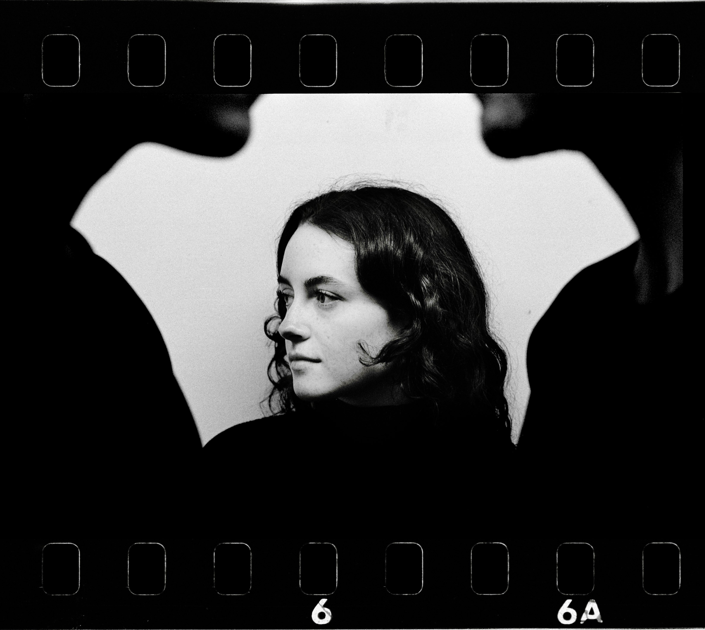

Reileybenwillwillbenreiley

400CAD
20 x 17 in
Shot on film
2023
I created this piece during a period of deep reflection on my experiences as a perpetual third wheel in
various relationships throughout my life. While I don't necessarily view being friends with a couple as
negative, I've often pondered whether there could exist a healthy balance within a trio, where two are
romantically involved and one remains single.
This piece represents a somewhat selfish endeavour in which I deliberately place the spotlight on the third
wheel. It may seem self-centred or even unconventional, but there's a profound sense
of validation in
being
acknowledged, understood, and centred, even if only for a fleeting moment.
It's an exploration of the dynamics of friendship and the intricate balance of inclusion and individuality
within social circles. Ultimately, it underscores the importance of recognizing and honouring the unique
perspectives and experiences of all parties involved, regardless of their relational status.